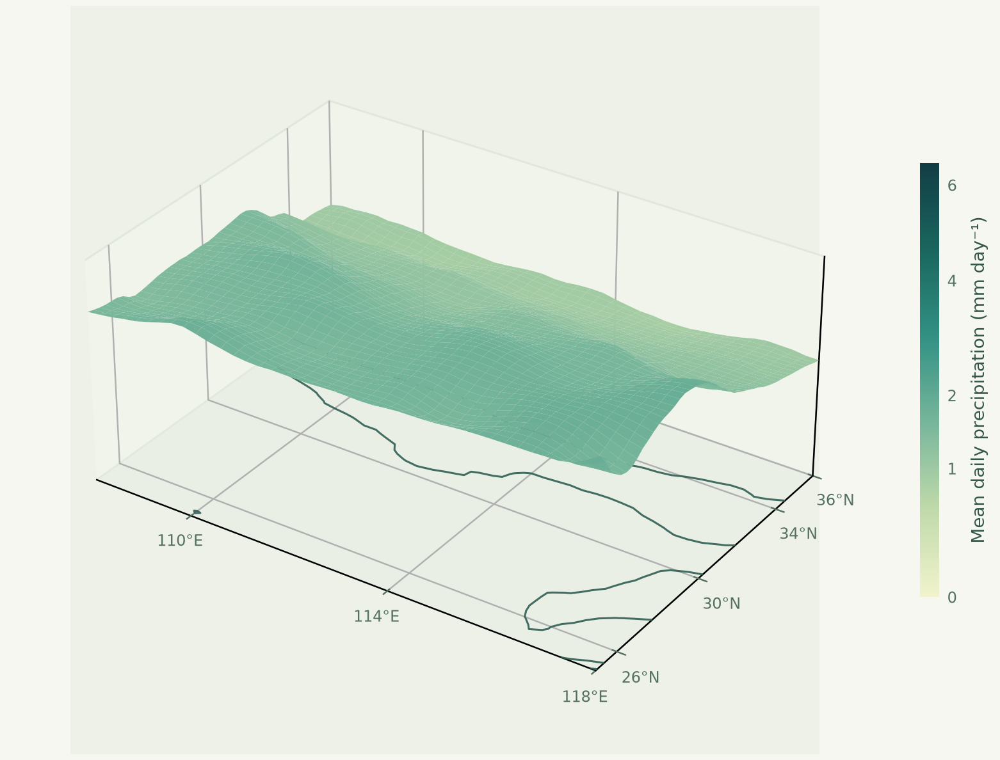

统一的数据模型
用 Field 一起传递数组、维度、坐标与属性，让时间、空间和物理单位在研究流程中保持清晰。
CLIMATE ANALYSIS, WITH CLARITY.
Klimapy 为气候分析提供统一入口，用 Python 表达研究流程，让 Rust 执行底层计算，把精力留给问题本身。
pip install klimapy
01 / DESIGN PHILOSOPHY
围绕气候分析工作流组织功能。让数值算法、数据语义和研究结果各有明确的位置。
用 Field 一起传递数组、维度、坐标与属性，让时间、空间和物理单位在研究流程中保持清晰。
极端指数、统计降尺度、降水、统计分析与辅助工具分组组织。BCSD 是统计降尺度的首个方法。
每个函数分别说明基准期、单位、有效样本和缺测规则。验证页同时展示结果一致性与实测效率。
02 / GET STARTED
在独立环境中安装 Klimapy。以下示例展示 1.2.0 的功能接口。
源码构建需要 Cargo。NetCDF 文件读写需要系统 libnetcdf / HDF5；Shapefile 和 CRS 转换另需原生 GDAL。
python -m pip install --upgrade klimapy
# 查看已安装版本
python -m pip show klimapy03 / THE API
选择工作流查看调用示例。输入文件与变量名请替换为自己的数据；计算前核对单位、日历与有效覆盖率。
04 / DATA MODEL
05 / OPEN SCIENCE
查看算法说明、使用边界和更新记录，也欢迎通过 GitHub 反馈问题。